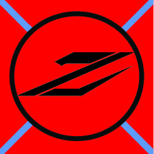

I write this journal mostly for myself, just so I can get what happened to us straight. I wish my family could read this, and know that I am alright, but that is not possible anymore. So instead, I shall put our story into words so that just maybe our sacrifies will not be forgotten. We come from a proud people, the Zinan, and we have been locked in a difficult war for the last six years. We were winning the battles, but losing the war. And in our desperation, we searched for any possible solution that could win us the war. Even though we aren't a particullarly superstitious people, in our desperation we even tried using magic. And this is where our story begins. We are the 86th Infantry Battalion of the Zinan Imperial Army. We were assigned to guard some scientists as they investigated an ancient, nearly forgotten temple left behind by some forgotten race. The temple was located in a thick jungle just a few miles from the front. Even though this temple was impressive in size, we just figured it was another waste of manpower. At first many of the men were asking the Colonel if we could just leave the scientists and march to the front, which last we heard was only an hour's march away. But when the enemy suddenly showed up one day at the break of dawn, noone was excited. It quickly became apparent that we were vastly outnumbered, like usual. Before long, the Colonel was contemplating retreat, but the head scientist was able to convince him that they were close to discovering some big, long forgetten, secret vital to our victory. The Colonel determined that we would stay, and inspired us to fight to the last man. At first, we faced only enemy infantry, but eventually their cavalry and artillery joined the fray. Before long, we had less than a hundred men remaining, and there were no signs that the enemy attack would end. Suddenly, there was a blinding flash of light and a loud ear-splitting roar, and suddenly the temple and everyone near it were someplace else. During the flash of light, I remember a strange feeling, like the vary air itself was on fire, but it was over in an instant. After the flash of light, the first thing I noticed was that there was no jungle. We found ourselves, and the temple, now on the coast of a small island, looking at an adjacent island with a big volcano. The volcano reminded me of Mount Mushato from home, and the mainland lay in a bank of fog beyond it. Before we could begin to question what had happened, the enemy forces that had been transported along with us restarted the fight. Thankfully, only a handful of them had been transported, and we quickly dispatched them. As we began to search our surroundings, three monsters (they appeared almost human) arose from the sea, and some startled privates quickly dispatched them. At this point, the scientists reported that we were transported the moment an enemy artillery shell destroyed the large, strange crystal atop the temple. They concluded that whatever magic that crystal contained, it was gone now, and that we are now trapped in this strange land forever. The Colonel decided that we would move to the large volcano, by wading through the shoals. One of the corporals named the place Dukat Island, and it stuck. Over the next week, we began contructing a base, fortifying our new home. Shortly after we completed the bridge connecting our island to the mainland, we got visitors. Our visitors appeared like hell-spawn, but they seemed friendly, and after our linguist deciphered their language, we discovered that they called themselves Tieflings. They gave us maps and information on the surrounding lands and races for no charge. It turns out those monsters from the sea are called the Undine, and they will probably resent what we did. The Tieflings also told us of the D'Synge (a bat-like race) to the Southeast, who will help anyone, for a price. Additionally, they told us of a large city directly to our East (which is inhabited by a half orc, half human race), where we could go for supplies. We paid them a hefty sum of gold, and they vanished into the night. The next day, we sent a scout party to the large city the Tieflings told us about. To our horror, we learned the orcs that inhabited it were cannibalistic. When our scouts refused to eat the natives's peace offering of a severed arm, we greatly offended them, starting a war. Our scouts barely managed to escape unharmed. The Colonel quickly formed up the Battalion, and we met the orc army outside their city. We had no problem dispatching their army, as they were armed only with clubs, and we are armed with the latest black powder muskets from Zinan. The rest of the orcs swore allegiance to us, having watched the battle. As it turns out, the orcs had several salts that we need to make black powder (they had no use for the salts, and they gladly gave us great quantities). There is already an abundance of sulfur bubbling up around the volcano and the island has several caves filled with guano from the bat-like creatures that inhabit them. We have even found several deposists of lead around the island. Producing ammunition isn't our problem, but forging new weapons for our growing army is. After our last battle, the Colonel decided that the best way forward is to conquer all of the surrounding races and create a new Zinan Empire, beginning with the Tieflings.
Here is a record of our appearance and demenor. Race/Faction Name: the Zinan. Average Height: 6' (2m). Average Weight: 160lb (70kg). Skin Color: Pale White. Eye Color: Emerald Green. Religion: Heathen, combination of all major relgions. Society: Bushido. Lessons Taught: Honor, fighting. Schooling: Tactics, refined fighting, practical skills and knowledge. Coming of Age: Ceremony when the adults recognize and acknowledge a child's maturity; usually between 12-20. Hunting Object (Main Food): Omnivorious. Main Import: Various salts and metals. Main Export: Technology. Hierarchy: Militaristic, Imperial. Relationships (Intra): Very open, but very serious. Alignment: Lawful, Evil. Faction Symbol/Flag: 
Back to Home